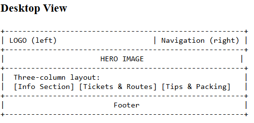

Site Name
Name: Machu Picchu Travel Guide
I chose this name because it clearly communicates that the website provides travel information and guidance specifically for visiting Machu Picchu. It is simple, descriptive, and aligned with the purpose of the project.
Site Purpose
The purpose of this website is to guide travelers who want to visit Machu Picchu by providing essential information such as transportation options, ticket types, best visiting times, packing tips, and recommended experiences for the trip.
Scenarios
- What transportation options are available to reach Machu Picchu from Cusco?
- When is the best time of the year to visit Machu Picchu with fewer tourists?
Color Scheme
Primary Color: Dark Green (#0B3D2E) – Used for headings, borders, and accents.
Secondary Color: Soft Beige (#F2E8CF) – Used for backgrounds and layout areas.
Typography
Font 1: Merriweather – Applied to headings.
Font 2: Roboto – Applied to body text and paragraphs.
Wireframes
Mobile Wireframe
This wireframe shows the simplified vertical layout for small screens.

Desktop Wireframe
This wireframe shows the wider layout for large screens with more content spacing.
